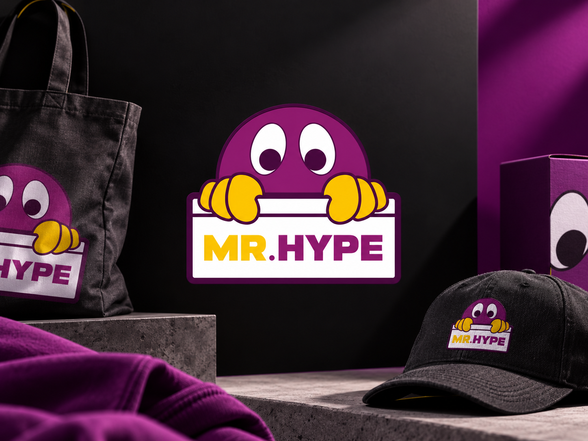
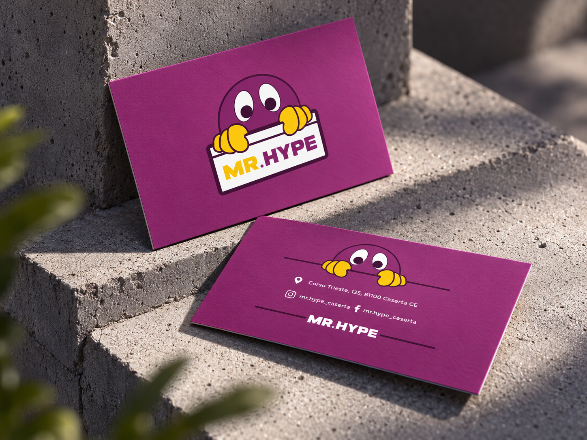
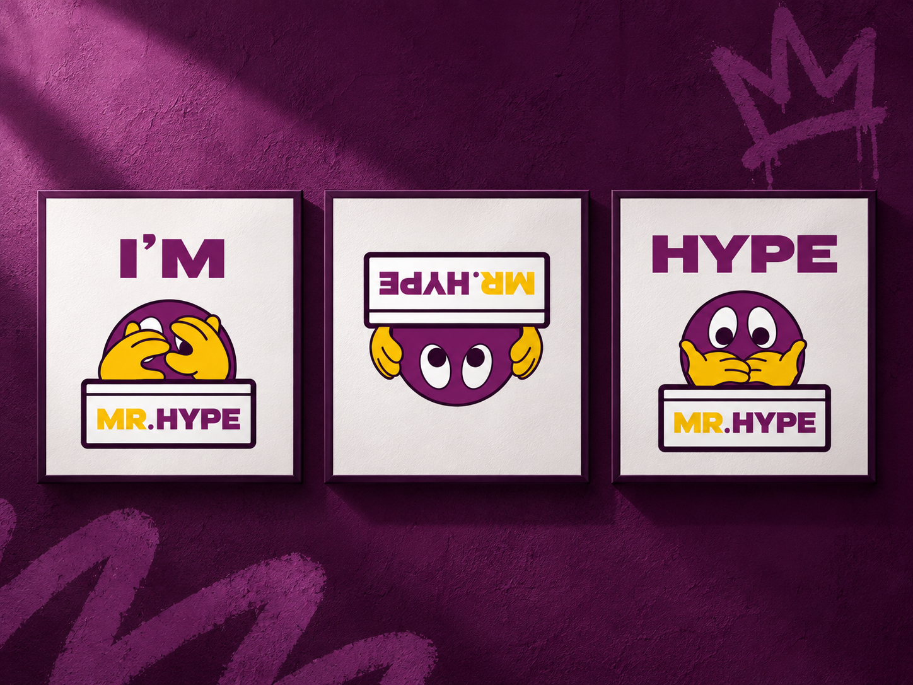
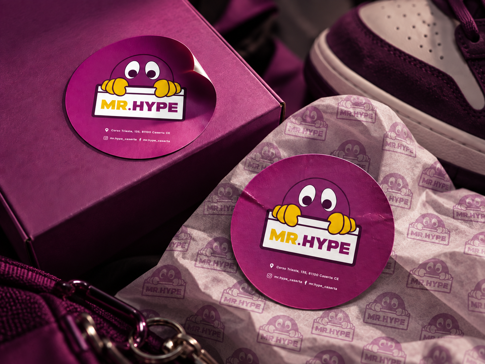
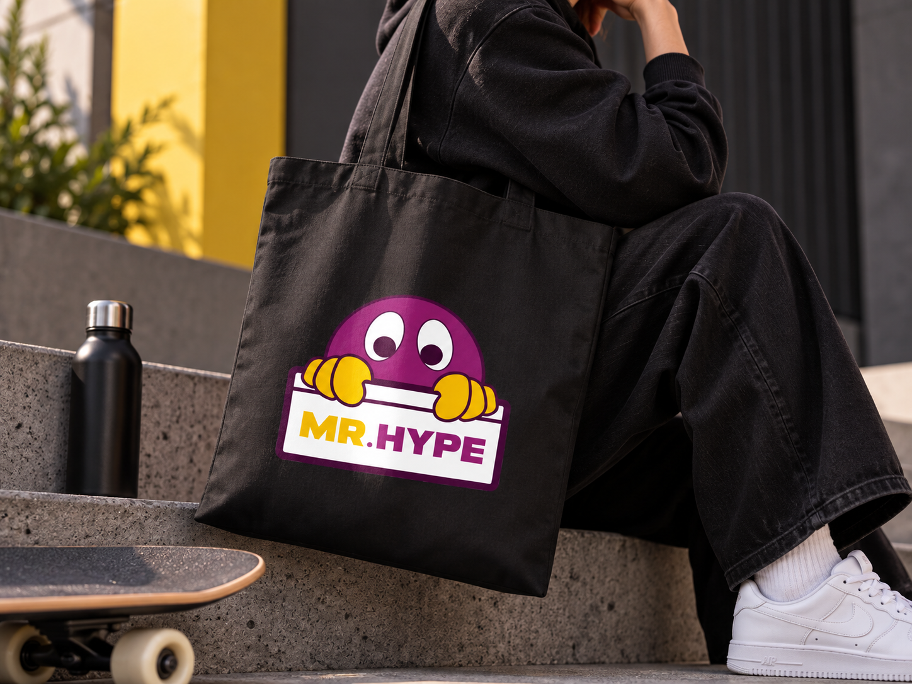
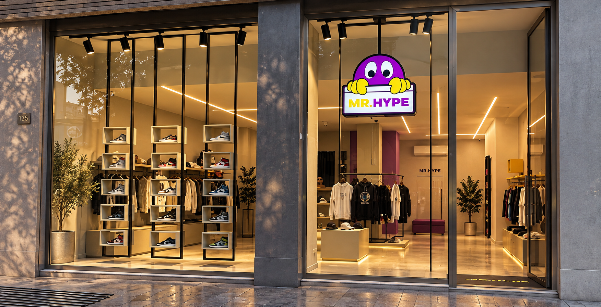

Branding / 03
MrHype
A playful identity for streetwear culture, where limited editions meet a character of their own.

Brief
MrHype is a clothing and sneaker store specialising in streetwear and limited-edition products. The brief was to create a distinctive identity that captures the energy of this culture while giving the store a recognisable personality beyond the products it sells.
Brand concept
I placed a playful mascot at the centre of the identity. Its expressive eyes and yellow hands bring a human touch to the bold wordmark, turning the logo into a character that can interact with the audience.
Creative direction
Deep purple sets the mood, yellow brings energy, and black and white keep the applications clear. Chunky lettering and cartoon-inspired gestures balance a confident streetwear attitude with an approachable tone.
- Year
- 2023
- My role
- Brand design
- Tools
- Adobe Creative Cloud · Blender · Figma
- Deliverables
- Visual identity, packaging, promotional materials
Visual identity
The mascot and wordmark form a compact signature. Purple surfaces and yellow accents carry the same visual language into printed materials, making even a small business card feel unmistakably MrHype.

Brand personality
The logo becomes a character with its own attitude. Different poses, gestures and orientations let the mascot express surprise, curiosity and confidence while retaining the same recognisable features.

Packaging & everyday essentials
Stickers, wrapping paper and a tote bag bring the identity into the experience around a purchase. The mascot stays central, while repeated motifs and contrasting surfaces connect each application to the same visual world.


Retail presence
The storefront brings the character into the physical retail space. Applied to the glass, the logo introduces MrHype from the street and creates continuity between the store, its packaging and the objects customers take away.

Outcome
The result is a coherent visual identity with room for expression. Across the mockups, the same character connects print, packaging, accessories and retail, giving MrHype a distinctive presence within streetwear culture.